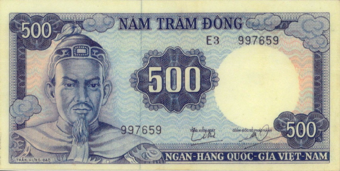
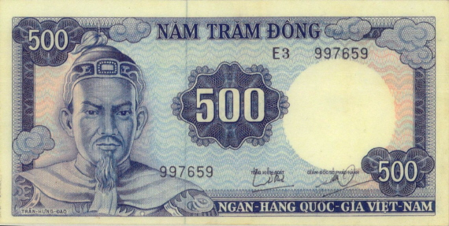

Giai đoạn 1945–1951
Giấy bạc Việt Nam Dân chủ Cộng hòa – “Giấy bạc Cụ Hồ”
Ngày phát hành đầu tiên: 31/1/1946.
Cơ quan phát hành: Bộ Tài chính Việt Nam Dân chủ Cộng hòa.
Tên gọi thường dùng: Giấy bạc Cụ Hồ (in chân dung Chủ tịch Hồ Chí Minh).
Chất liệu: Giấy, in thủ công tại chiến khu Việt Bắc.
Mệnh giá: 1đ, 5đ, 10đ, 20đ, 50đ, 100đ.
Đặc điểm thiết kế:
- Mặt trước: Chân dung Hồ Chí Minh, dòng chữ “Việt Nam Dân chủ Cộng hòa”.
- Mặt sau: Hoa văn dân tộc, số sê-ri, chữ ký Bộ trưởng Tài chính.
- Có ký hiệu “A”, “B”, “C”… để phân biệt từng đợt in.
Mục đích:
- Thay thế tiền Đông Dương của Pháp.
- Gây quỹ cho chính quyền kháng chiến.
- Tạo niềm tin vào nền tài chính độc lập.
Bối cảnh và ý nghĩa
Sau Cách mạng tháng Tám, chính quyền non trẻ phải gây dựng nền tài chính độc lập. “Giấy bạc Cụ Hồ” ra đời trong hoàn cảnh kháng chiến gian khổ, trở thành biểu tượng của lòng tin vào Chính phủ và Bác Hồ. Dù mộc mạc, tờ tiền thể hiện ý chí tự cường và tinh thần độc lập dân tộc.
.jpg)
.jpg)
.jpg) 

.jpg)
.jpg)
.jpg)
.jpg)